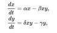
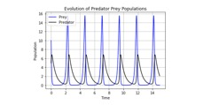

Projects
Lotka Volterra Model Cubic Spline Analysis
Biological Theory
The Lotka-Volterra equations are a set of nonlinear differential equations that seek to describe the relationship between the populations of a predator and its prey in a given ecosystem. For the equations below, let t describe time, x describe the population of prey, and y describe the population of the predator. The four parameters (alpha, beta, gamma, and delta) represent various rates, specific to individual species and populations, that help tailor the model for case by case usage. Alpha represents the growth rate of the species of the prey in the absence of predation, beta represents the death rate of our prey due to encounters with the predator, delta represents the rate of growth of the predator population in response to the relationship with the prey, and lastly gamma represents the natural death rate of the predator in the absence of the prey.

The equations are set up so that as the population of the prey peaks, the predator population will rise shortly thereafter due to the hightened food supply. Likewise, as the population of the predator peaks, the prey population will fall shortly thereafter due to an increased rate of predation. This staggared oscillatory nature is the defining mark of the Lotka-Volterra equations.

Mathematical Theory
Cubic spline interpolation is a technique in numerical analysis that allows the user to fit a series of third degree polynomials between each data point in our overall dataset. By doing this, we are able to visualize the data in a more fluid and comprehensive manner, rather than just "connecting the dots" between each data point. This also gives us the added ability to find the first or second derivative at any point in our dataset's range that we choose, as well find the integral over any range in our datset.
Results
The data set used for this project was from the Isle Royale Wolf and Moose study that has been under way at Lake Superior over the course of the last five decades. The predator here is of course the wolf, and the prey the moose. In the graph below, we have a nice visualization that comes from fitting a series of cubic splines to the wolf dataset. Each color in the curve is an individual cubic polynomial. We can see how they come together in order to create the big picture.

Below is the same idea as above, this time using the data collected from the moose population.

Finally, we can overlay both graphs and see just how the two populations interacted over the last sixty years or so.

Note the two seperate y-axes, as we will always see significantly more prey that predators in a healthy ecosystem. In the final image below, the green curve represents the wolf population, and the rainbow curve represents the moose populatoin. We can see how when the wolves began to grow in numbers around twenty years into the experiment, the moose population began its decline. We can then see how this very same decline in moose caused a subsequent decline in the population of the wolf, followed by a spike in the moose population, due to decreased predator pressure. While the real life data is not as clean as what our differential equations predicted, the Lotka-Volterra Model still explains a large amount of the changing population dynamics that are observable in the natural world today.